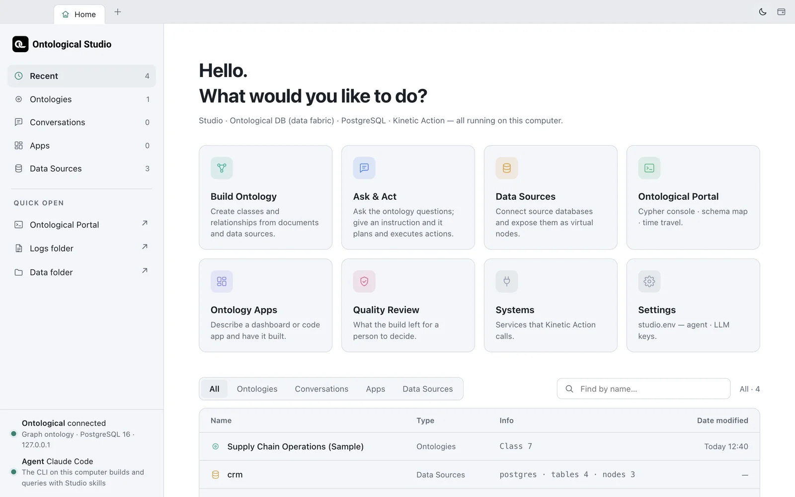

Look at each feature on the Home screen and learn how to use tabs and windows. Later exercises all start from the Home screen.
Home — What would you like to do?#

Each card is one feature. Clicking a card opens it in a new tab.
| Card | What it does | Chapters |
|---|---|---|
| Build Ontology | An agent designs and fills classes and relationships, based on documents, data sources and systems | Chapter 11–Chapter 12 |
| Ask & Act | Ask the ontology questions in plain language; give an instruction, and actions are planned, approved and executed | Chapter 13, Chapter 16 |
| Data Sources | Connect source databases and expose their tables as virtual nodes | Chapter 5–Chapter 6 |
| Ontological Portal | Cypher console, schema map, time travel | Chapter 7–Chapter 10 |
| Ontology Apps | Build dashboards or code apps by describing them | Chapter 17–Chapter 20 |
| Quality Review | Check the items a build left for a person to decide | Chapter 12 |
| Systems | Register the business systems (microservices) that actions call | Chapter 14 |
| Settings | studio.env — the agent and LLM keys |
Chapter 1 |
The Recent list at the bottom shows ontologies, conversations, apps and data sources. Click a row to open that item. Filter the list with All · Ontologies · Conversations · Apps · Data Sources above it, and search by name in the box on the right.
Tabs and windows#
- The tab bar is the window's title bar. The first tab is always Home.
- Tabs are independent of each other, so you can try queries in a Portal tab while the agent works in a build tab.
- Right-click a tab and choose Open in new window to move it into a separate window. This is handy if you have two screens.
| Shortcut (on Windows, Ctrl instead of ⌘) | Action |
|---|---|
| ⌘T | Go to the Home tab |
| ⌘W | Close tab |
| ⌘1 · ⌘2–8 · ⌘9 | Home · nth tab · last tab |
| ⌃Tab / ⌃⇧Tab | Next / previous tab |
| ⌘R | Reload tab |
| ⌘N | New window |
Light and dark#
Switch themes with the sun/moon button at the right of the tab bar. All open tabs, dashboards and code apps switch together. The Portal is designed for the dark theme only, so it stays dark even in the light theme.
The left rail#
Inside a Studio tab, the vertical bar on the left (the rail) has the same features as icons. Use the rail to switch screens within one tab, and use the Home cards when you want screens side by side.
Check yourself
- On Home, click the Data Sources card and then the Ontological Portal card to open two tabs.
- Move the Portal tab into a new window, then close that window.
- Switch to the dark theme and check that all open tabs change with it.
Hint
Closing a window also closes the tabs in it, but the app's data stays. Pressing ⌘W on the Home tab closes the whole window, and closing every window quits the app.